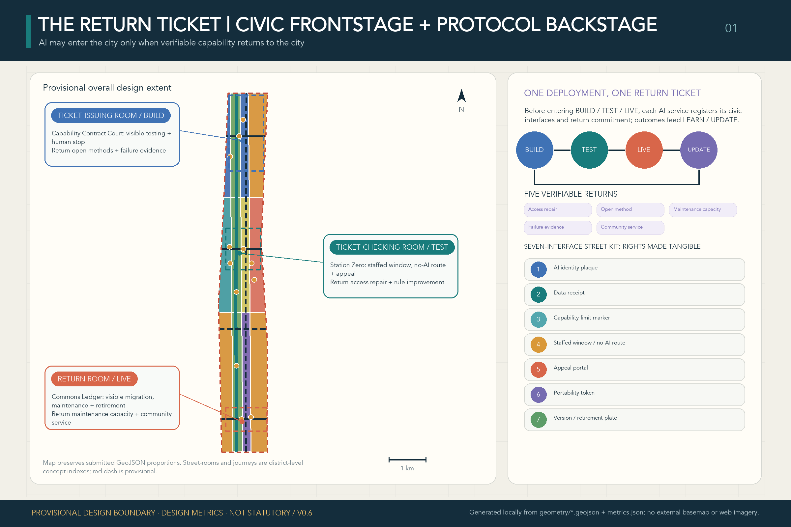
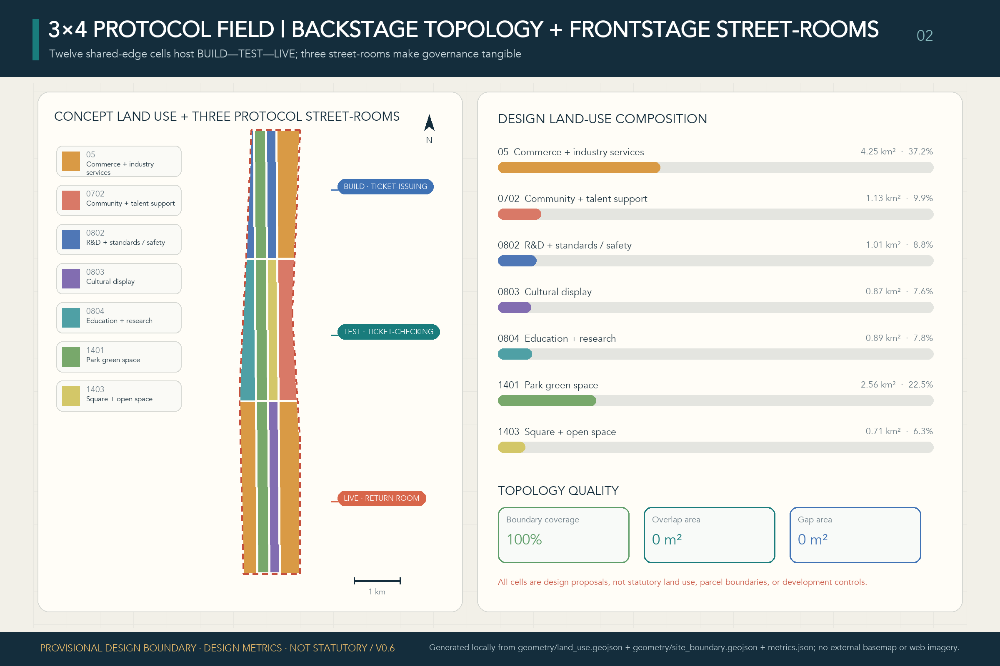
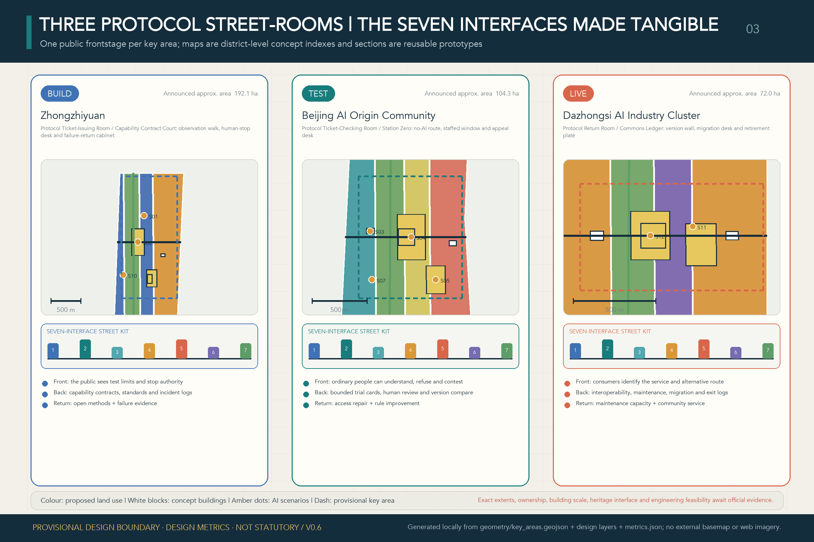
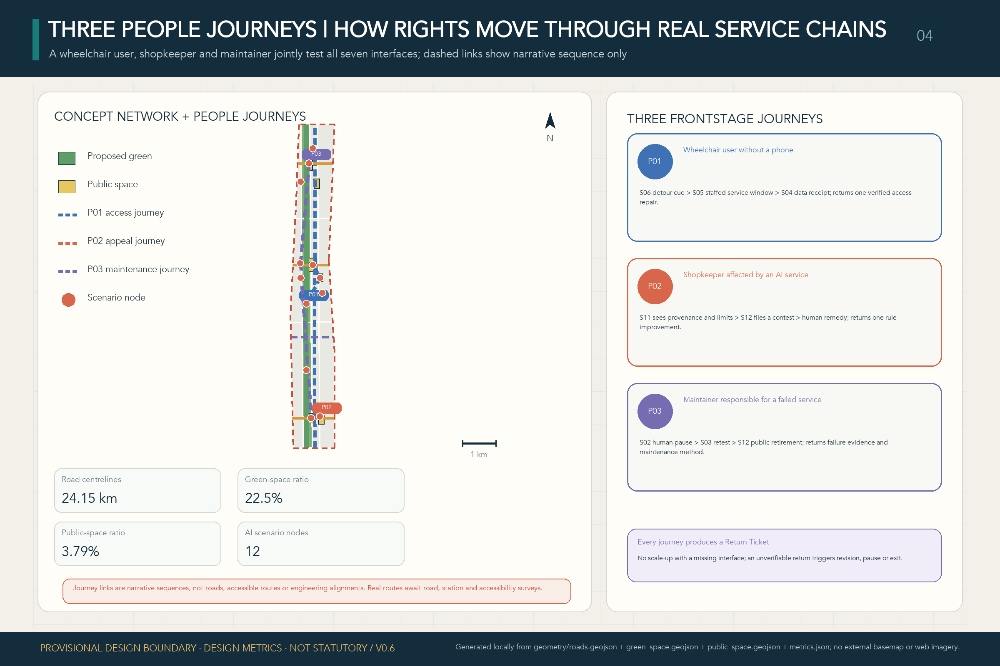
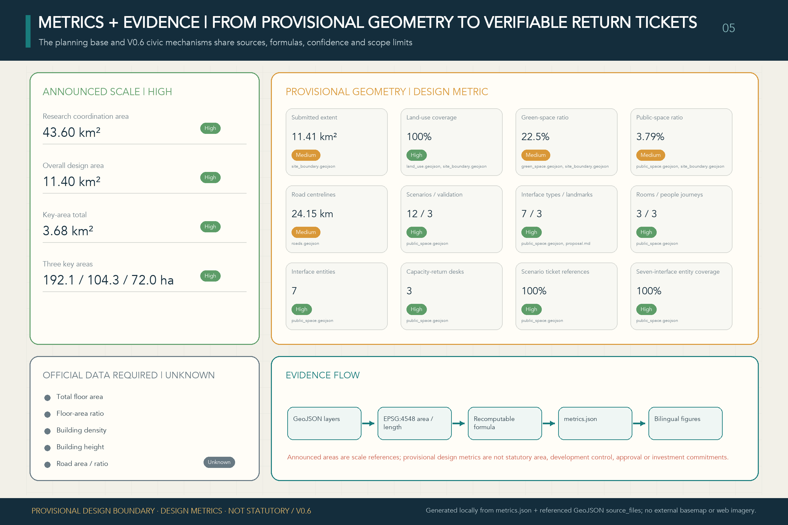

Current reproducible metrics
EPSG:4548 · metrics.json · geometry/*.geojson
V0.6 verifiable mechanisms
public_space.geojson · feature_kind · reciprocal references
One deployment, one Return Ticket
Before an application enters BUILD / TEST / LIVE, it registers all seven interfaces and a return commitment. LEARN / UPDATE uses operating evidence to scale, revise, pause or retire it. The 3×4 backstage topology supports three frontstage rooms: Ticket-Issuing, Ticket-Checking and Return.
BUILD→TEST→LIVE→LEARN / UPDATE↺
Five public-facing civic returns
Return types are concept commitments, not achieved performance. Each ticket retains an accountable operator, evidence reference, verification state, review date and retirement state.
Access repairOpen methodMaintenance capacityFailure evidenceCommunity service
Seven-interface street kit | rights become urban components
I1 AI identity plaqueI2 Data receiptI3 Capability-limit markerI4 Staffed window / no-AI routeI5 Appeal portalI6 Portability tokenI7 Version / retirement plate
Three key areas | three protocol street-rooms
Capability Contract Court: visible test limits, human stop and open methods.
Protocol Station Zero: no-AI route, staffed window, appeal and remedy.
Jing-Zhang Commons Ledger: migration, maintenance, retirement and public memory.
Three frontstage people journeys
Detour cue > staffed window > data receipt > access repair
See provenance and limits > contest > human remedy > rule improvement
Human pause > retest > public retirement > failure evidence and maintenance method
Task coverage and self-check status
All exhibit entries derive from one structured evidence set. Bilingual drawings, the manifest and the full self-check are included in the V0.6 closeout. Official inputs and approval-level professional judgments remain future deepening conditions.
overview mapthree-level scopeland usemobilitygreen and public spacerenewal projectsAI scenarioscore metricstask coverageself-check statusassumptions
Bilingual analytical figures
The five V0.6 analytical pairs are generated from local geometry/*.geojson and metrics.json, with no external basemap or network image. See the Chinese page for the paired Chinese figures.





Statutory and engineering metrics kept unknown
Total floor area, FAR, statutory building density, height, setbacks, road area and road ratio remain unknown. The constraint layer is empty pending official planning controls, building and ownership surveys, roads, utilities, fire, heritage and flood evidence.
assumptions.json · geometry/constraints.geojson · standard_matrix.json
Evidence sequence
Source → design judgment → GeoJSON / metric → bilingual figure → matrix → self-check. Any official boundary or control update triggers whole-package regeneration and recalculation.
sources.json → geometry / metrics → figures → matrices → self_check.json